Flora of Manzanillo
Manzanillo’s warm coastal climate supports many tropical trees, fruits, and plants that are part of everyday life.

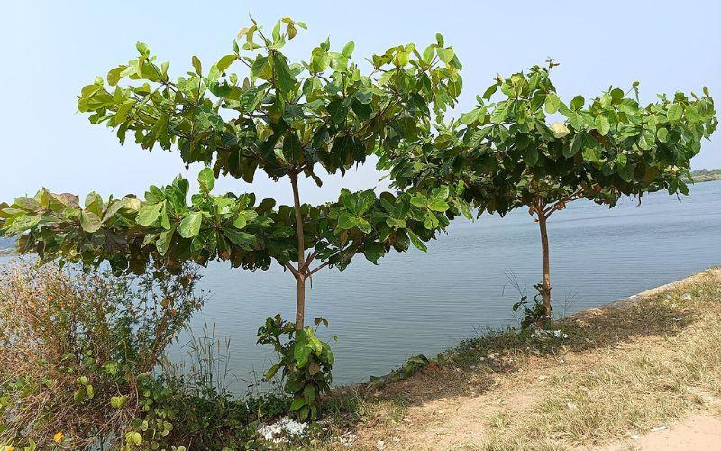
Almendra
The tropical almond tree produces edible fruits that turn yellow or red-purple when ripe and contain a small nut inside.
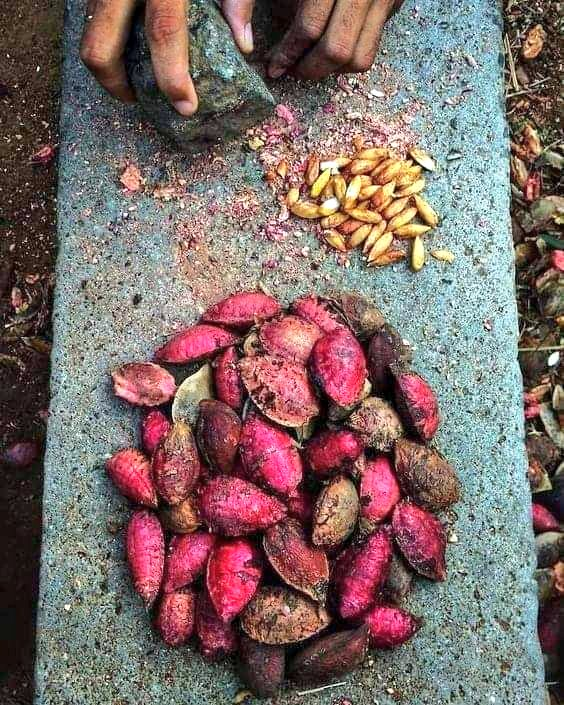
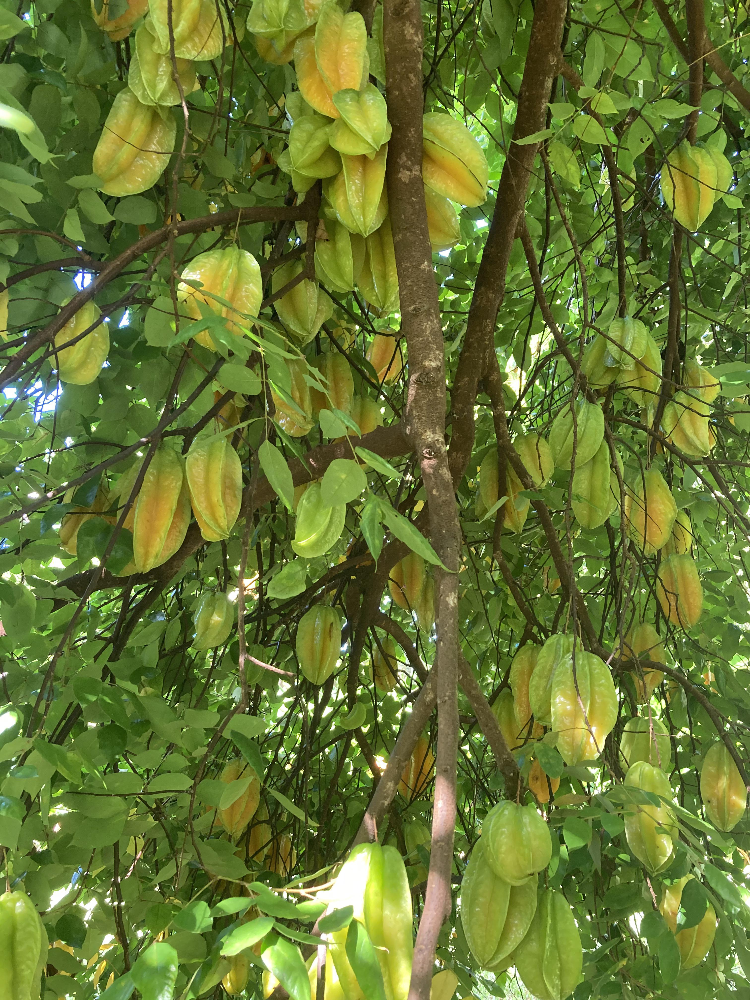
Carambolo
Carambolo is a tropical fruit known for its star shaped slices, crisp texture, and sweet tart flavor.
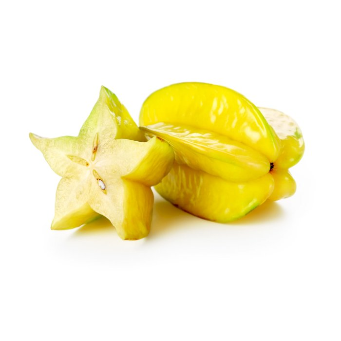
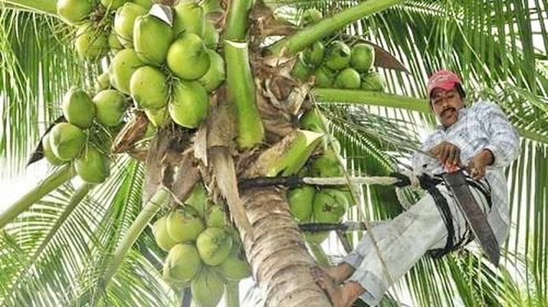
Coconut Palm
Coconut palms provide fresh coconut water, pulp, and traditional sweets such as coconut apple, a soft delicacy found inside germinated coconuts.
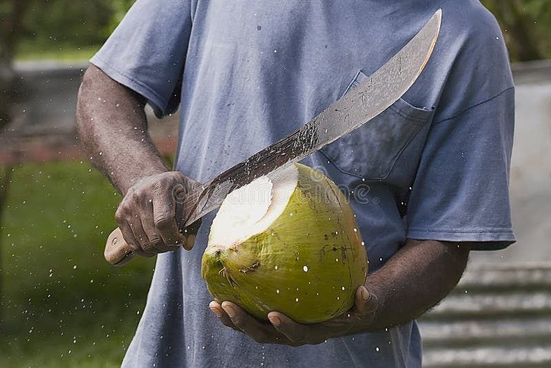
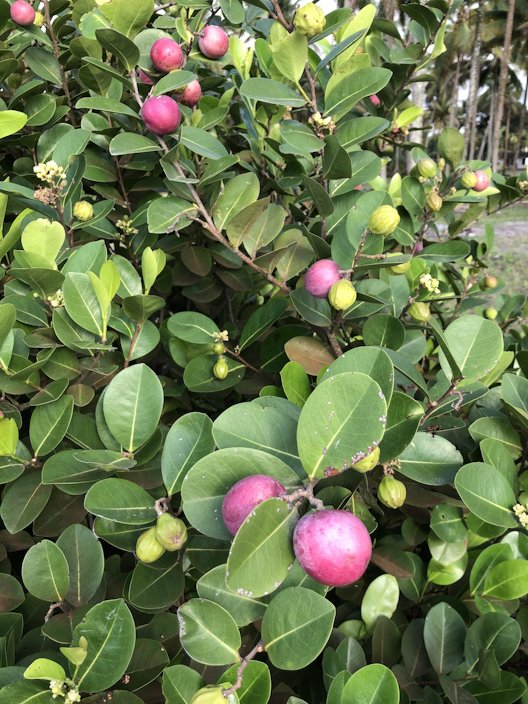
Icaco
Icaco, also known as cocoplum, produces small tropical fruits that range from white to dark purple and have a mild sweet flavor.
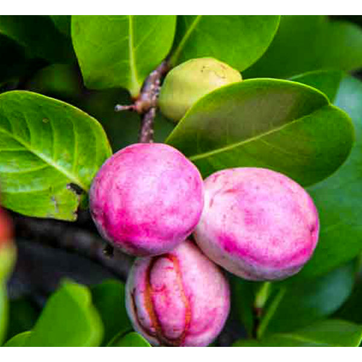
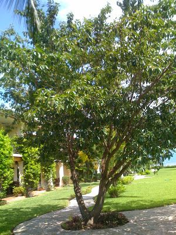
Nance
Nance is a small golden fruit with a distinctive flavor that can range from sweet to slightly acidic.
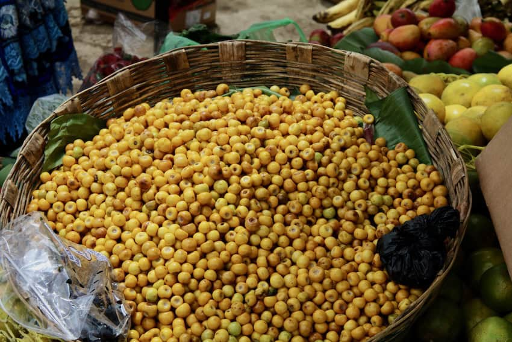
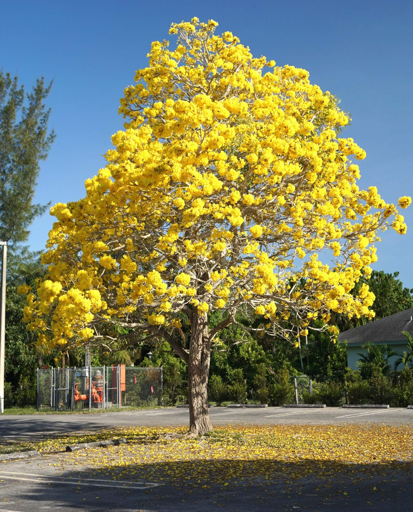
Guayacán Amarillo
Guayacán amarillo, also called the golden trumpet tree, blooms with bright yellow flowers that briefly cover the ground like a yellow carpet.